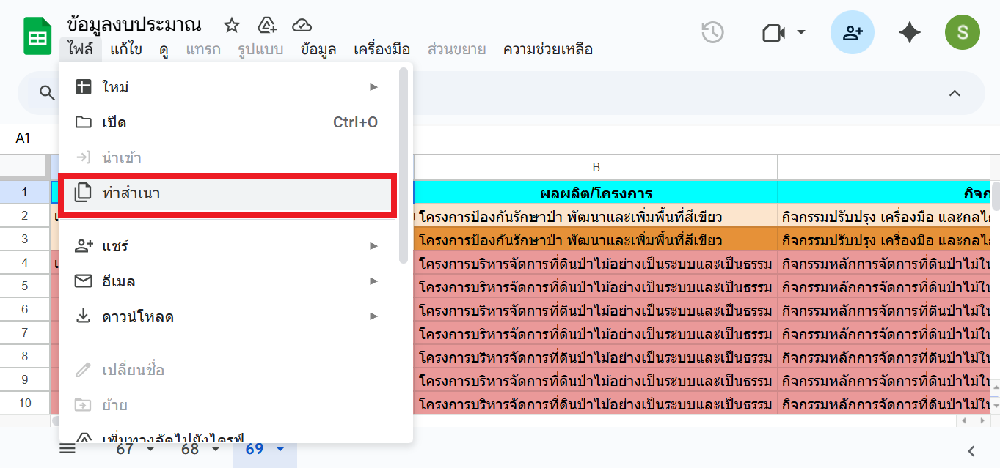
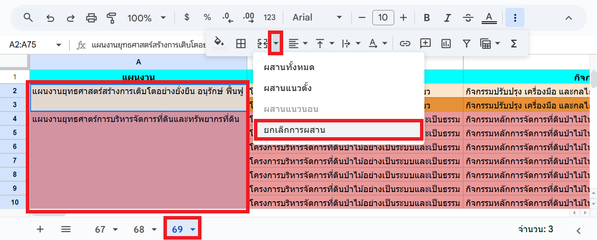
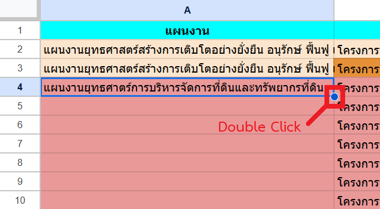
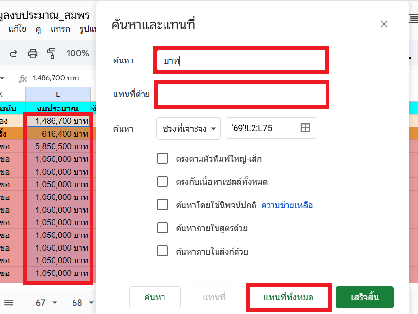
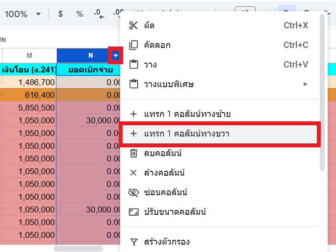
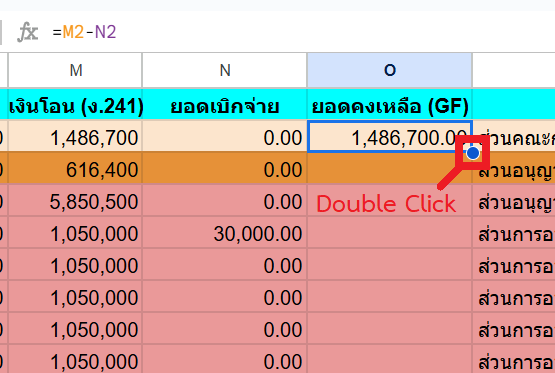

Workshop 1: การจัดเตรียมและทำความสะอาดข้อมูล (Data Preparation & Cleaning)¶
สถานการณ์จำลอง¶
ท่านได้รับมอบหมายให้จัดทำรายงานแผนงานและงบประมาณประจำปี 2569 ของกอง โดยหัวหน้าส่งลิงก์ Google Sheets ที่จะใช้ประกอบการสร้างรายงานมาให้ เมื่อเปิดลิงก์แล้ว ท่านพบว่าเป็นลิงก์แบบ "อ่านอย่างเดียว" จึงไม่สามารถแก้ไขข้อมูลได้ และพบว่าข้อมูลค่อนข้างพร้อมที่จะนำไปสร้างเป็นรายงานแล้ว อย่างไรก็ตาม มีจุดที่ต้องแก้ไขอยู่บ้าง ได้แก่ ข้อมูลในตารางที่มีการผสานเซลล์ มีตัวอักษรปะปนในคอลัมน์ที่อาจจะต้องใช้สำหรับการคำนวณ และยังไม่มีคอลัมน์ "ยอดคงเหลือ (GF)" ที่อาจต้องใช้ประกอบการสร้างรายงาน เพราะฉะนั้น จึงต้องจัดเตรียมและทำความสะอาดข้อมูลให้เหมาะสมกับการสร้างรายงานก่อนเป็นอันดับแรก
วัตถุประสงค์¶
- คัดลอกไฟล์ Google Sheets ต้นฉบับมาเป็นของตนเอง
- ตรวจสอบและจัดโครงสร้างข้อมูลในตารางให้ถูกต้อง
- ทำความสะอาดข้อมูลตัวเลขและเตรียมคอลัมน์คำนวณสำหรับใช้งานต่อ
การทำสำเนาไฟล์ (Make a Copy)¶
- เปิดลิงก์ที่ได้รับจากหัวหน้า https://docs.google.com/spreadsheets/d/1dKeUK6-k2r0xv4-5j7PX06Ha4Faoq5qEPzwMb_6gy4Q/edit?usp=sharing
-
ไปที่ ไฟล์ (File) > ทำสำเนา (Make a copy)

-
ตั้งชื่อไฟล์ใหม่ (เช่น
Workshop_ชื่อของท่าน) แล้วกด ทำสำเนา
ผลลัพธ์: ได้ไฟล์ใหม่ใน Google Drive ของตนเองที่แก้ไขข้อมูลได้
การยกเลิกการผสานเซลล์ (Unmerge Cells)¶
- เลือกแผ่นงานที่ชื่อว่า 69 (ปีงบประมาณ พ.ศ. 2569) จะเห็นว่าข้อมูลในคอลัมน์ A (แผนงาน) มีการผสานเซลล์ จึงต้องยกเลิกการผสานเซลล์เสียก่อน
- คลิกที่เซลล์ A1 จากนั้นเลื่อนลงไปด้านล่าง แล้วกดแป้น Shift ค้างก่อนคลิกที่บริเวณเซลล์ A75 เพื่อเลือกเซลล์ทั้งหมดที่ต้องการยกเลิกการผสานเซลล์
-
คลิกเครื่องหมาย ▼ (ลูกศรชี้ลง) ที่อยู่ทางขวาของไอคอน ผสานเซลล์ (Merge Cells) จากนั้นเลือกเมนู ยกเลิกการผสาน (Unmerge Cells) เซลล์จะถูกแยกออกจากกัน และข้อมูลชื่อแผนงานจะอยู่ที่บรรทัดแรกของแต่ละกลุ่ม

-
คลิกเซลล์ที่มีข้อมูล เช่น A2 จากนั้นดับเบิ้ลคลิกที่วงกลมสีน้ำเงินที่อยู่บริเวณมุมล่างขวาของเซลล์ เพื่อเติมข้อมูลลงไปในเซลล์ที่อยู่ด้านล่าง ทำเช่นนี้จนมีข้อมูลแผนงานครบ จนถึงแถวที่ A75

การทำความสะอาดข้อมูลตัวเลข¶
- ท่านพบว่าข้อมูลในคอลัมน์ L (งบประมาณ) มีตัวอักษรปะปนอยู่กับตัวเลข เช่น
50,000 บาทแทนที่จะเป็น50000(มีเครื่องหมายจุลภาคคั่นตัวเลขหลักพัน และมีคำว่า " บาท" ต่อท้าย) ซึ่งไม่สามารถนำไปใช้ประกอบการคำนวณได้ จึงต้องลบตัวอักษรที่ปะปนอยู่ออกไป -
คลิกเซลล์แรกที่ต้องการแก้ไข ในที่นี้คือเซลล์ L2 จากนั้นเลื่อนลงไปด้านล่าง แล้วกดแป้น Shift ค้างก่อนคลิกที่เซลล์ L75 เพื่อเลือกเซลล์ที่ต้องการแก้ไข
เคล็ดลับ
สามารถกดแป้น Ctrl + Shift + ↓ แทนการกดปุ่ม Shift ค้างแล้วคลิกที่เซลล์สุดท้าย เพื่อเลือกเซลล์ที่มีข้อมูลที่อยู่ด้านล่างทั้งหมดได้
-
เลือกเมนู แก้ไข (Edit) จากนั้นเลือกเมนูย่อย ค้นหาและแทนที่ (Find and Replace) หรือกดแป้น Ctrl + H
-
ระบุข้อมูลตามรายละเอียดด้านล่าง จากนั้นกดปุ่ม แทนที่ทั้งหมด (Replace All)
- ค้นหา (Find):
บาท(ให้มีเว้นวรรคนำหน้าคำว่า "บาท" ด้วย) - แทนที่ด้วย (Replace with):
(ค่าว่าง) - ค้นหาช่วงที่เจาะจง (Search within):
'69'!L2:L75

- ค้นหา (Find):
-
ระบุข้อมูลตามรายละเอียดด้านล่าง จากนั้นกดปุ่ม แทนที่ทั้งหมด (Replace All)
- ค้นหา (Find):
, - แทนที่ด้วย (Replace with):
(ค่าว่าง) - ค้นหาช่วงที่เจาะจง (Search within):
'69'!L2:L75
- ค้นหา (Find):
-
กดปุ่ม เสร็จสิ้น (Done)
การเพิ่มคอลัมน์คำนวณ (Calculated Column)¶
-
คลิกขวาที่คอลัมน์ N (ยอดเบิกจ่าย) จากนั้นเลือกเมนู แทรก 1 คอลัมน์ทางขวา (Insert 1 column to the right) จะพบว่ามีคอลัมน์ว่างแทรกเข้ามาเป็นคอลัมน์ O

-
แถวบนสุดของคอลัมน์ O (ช่อง O1) เป็นชื่อคอลัมน์ ให้ตั้งชื่อว่า ยอดคงเหลือ (GF)
-
คลิกเซลล์ O2 จากนั้นพิมพ์สูตร
=M2-N2(เงินโอน - ยอดเบิกจ่าย)
-
ดับเบิ้ลคลิกที่วงกลมสีน้ำเงินที่อยู่บริเวณมุมล่างขวาของเซลล์ O2 เพื่อเติมสูตรลงในคอลัมน์ O จนถึงรายการสุดท้าย

ขณะนี้ข้อมูลของท่านสะอาด ถูกต้อง และพร้อมสำหรับการนำไปสร้างเป็นรายงานแล้ว